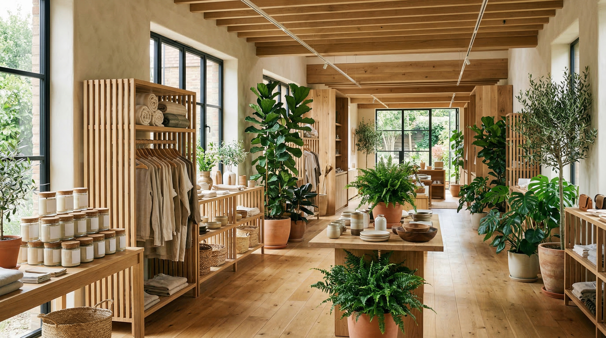
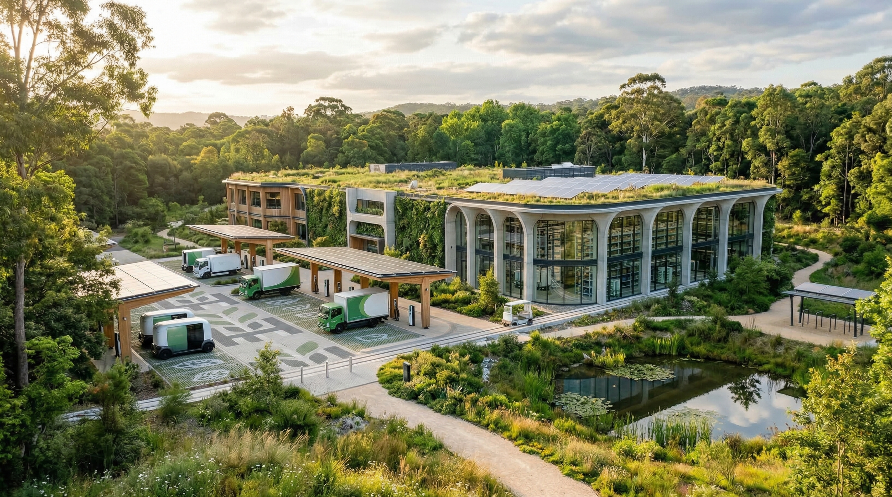

package_2
商品・包装設計
資材切替、サイズ見直し、表示整理まで含めて、包装刷新の意思決定を現実的に整えます。
Verdant Global は、ブランド設計、包装刷新、売場改善、回収導線づくりまでを一気通貫で支援します。環境配慮を、選ばれる理由と運用成果の両方に接続します。
Operational Proof
導入企業
38社
食品・日用品・小売包装、売場、会員導線、回収運用までを横断して支援した継続案件数。
包装刷新プロジェクト
61件
Material Switch
回収導線導入店舗
126店
Retail Collection
自然配慮を抽象的なメッセージで終わらせず、調達、包装、売場、回収の各接点に分解してKPIへ接続します。
Where We Help
対象は、食品・日用品・小売。抽象的な理念整理ではなく、生活者接点に効く改善テーマから着手します。
資材切替、サイズ見直し、表示整理まで含めて、包装刷新の意思決定を現実的に整えます。
店頭サイン、棚構成、EC説明、会員導線を連動させて、選ばれる理由を伝わる形に直します。
回収導線、店頭オペレーション、報告指標をまとめて設計し、継続できる運用に落とし込みます。
Project Snapshot
再生材比率だけでなく、棚割り、物流サイズ、表示ルールまで含めてパッケージを再設計。

店頭訴求、POP、会員導線を整理し、環境配慮商品を選びやすい売場へ切り替えます。

店頭回収、仕分け、月次レポートまでを設計し、現場が続けられる運用体制をつくります。